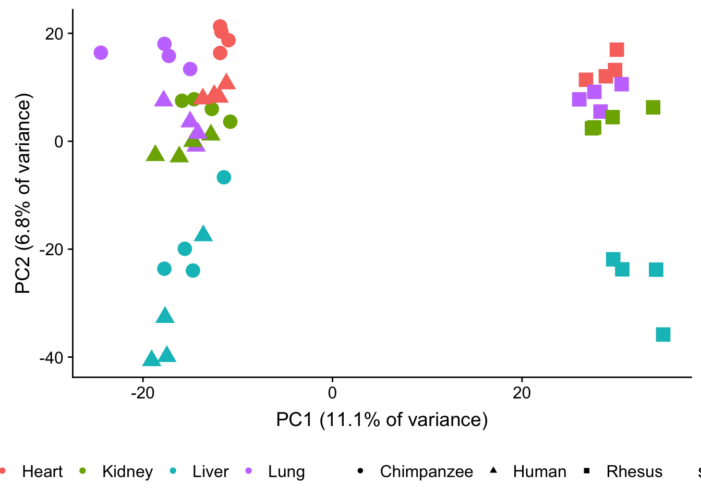
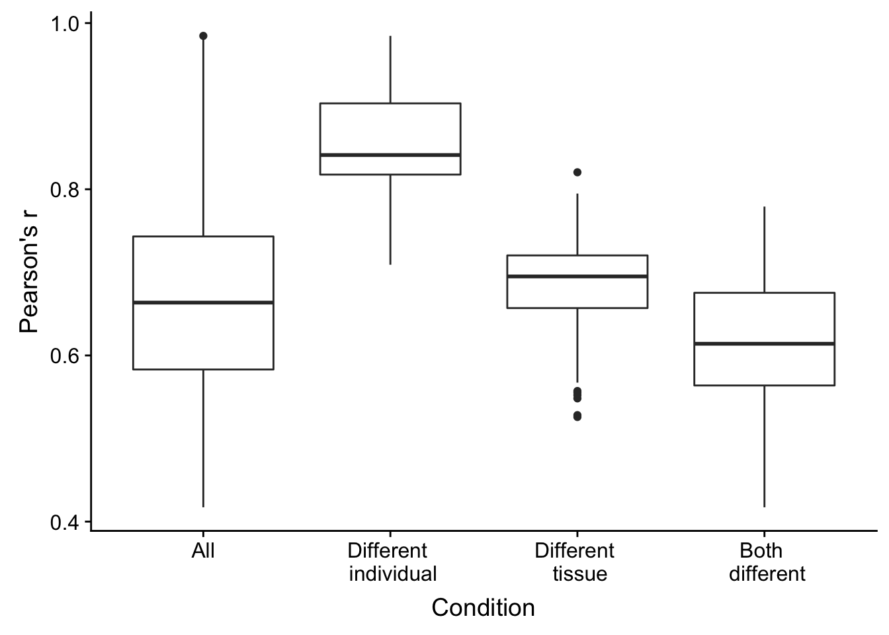
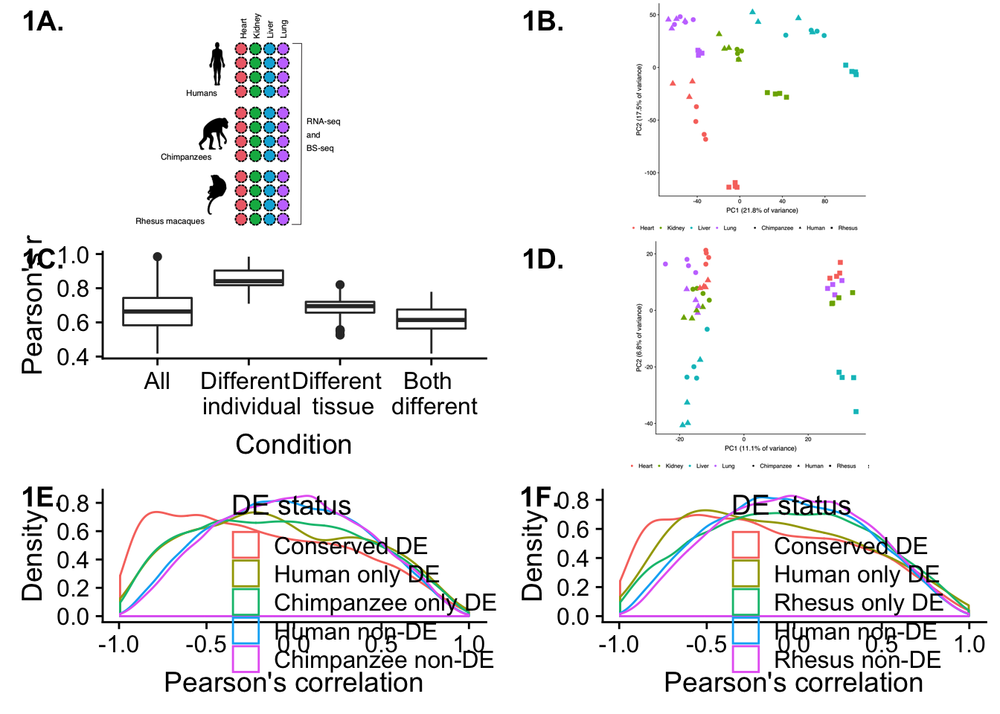

# Load libraries
library(plyr)
library(dplyr)## Warning: package 'dplyr' was built under R version 3.4.4##
## Attaching package: 'dplyr'## The following objects are masked from 'package:plyr':
##
## arrange, count, desc, failwith, id, mutate, rename, summarise,
## summarize## The following objects are masked from 'package:stats':
##
## filter, lag## The following objects are masked from 'package:base':
##
## intersect, setdiff, setequal, unionlibrary("tidyr")## Warning: package 'tidyr' was built under R version 3.4.4library("RColorBrewer")
library("ggplot2")## Warning: package 'ggplot2' was built under R version 3.4.4library("cowplot")## Warning: package 'cowplot' was built under R version 3.4.4##
## Attaching package: 'cowplot'## The following object is masked from 'package:ggplot2':
##
## ggsavecolors <- colorRampPalette(c(brewer.pal(9, "Blues")[1],brewer.pal(9, "Blues")[9]))(100)
pal <- c(brewer.pal(9, "Set1"), brewer.pal(8, "Set2"), brewer.pal(12, "Set3"))
# Load data
## Load counts
cpm_12184 <- read.delim("../../../Reg_Evo_Primates/data/PC_cpm_cyclic_loess_random_var_gene_exp")
## RNA-seq
sample_info_RNAseq <- read.csv("../../../Reg_Evo_Primates/data/Sample_info_RNAseq.csv")
sample_features <- sample_info_RNAseq[-17,]
samples <- read.delim("../../../Reg_Evo_Primates/data/Sample_info_RNAseq_limma.txt")
# Eliminate H1H
samples <- samples[-17,]Gene expression data for all genes passing filtering and all orthologous CpGs
pca_genes <- prcomp(t(cpm_12184) , scale = T, center = TRUE)
#pca_genes <- prcomp(t(cpm_12184) , scale = F, center = TRUE)
matrixpca <- pca_genes$x
pc1 <- matrixpca[,1]
pc2 <- matrixpca[,2]
pc3 <- matrixpca[,3]
pc4 <- matrixpca[,4]
pc5 <- matrixpca[,5]
pcs <- data.frame(pc1, pc2, pc3, pc4, pc5)
summary <- summary(pca_genes)
#dev.off()
plot.pca.true <- ggplot(data=pcs, aes(x=pc1, y=pc2, color=as.factor(sample_features$Tissue), shape=as.factor(sample_features$Species), size=2)) + geom_point(alpha = 1) + xlab("PC1 (21.8% of variance)") + ylab(paste("PC2 (17.5% of variance)")) + theme(legend.position="none")
plot.pca.true <- plot.pca.true + theme(legend.position = "bottom") + scale_shape_discrete(name = c(""), breaks = c("chimpanzee", "human", "rhesus macaque"), labels = c("Chimpanzee", "Human", "Rhesus"))
plot.pca.true <- plot.pca.true + scale_color_discrete(name = c(""), breaks = c("heart", "kidney", "liver", "lung"), labels = c("Heart", "Kidney", "Liver", "Lung"))
#plot_grid(plot.pca.true, p2, labels = c("A", "B"), ncol = 1)
#svg("./plot.pca.svg")
#plot.pca.true
#dev.off()
#pdf("./plot.pca.pdf")
#plot.pca.true
#dev.off()
## Data for methylation
# Code from cluster to get PCs and correlations from all 2 million orthologous CpGs
#all_methyl <- read.table("/mnt/gluster/home/leblake/Methylation/dfCovnoXposMeth.txt")
#all_methyl_48 <- all_methyl[,2:49]
#pca_genes <- prcomp(t(all_methyl_48) , scale = T, center = TRUE)
#pca_genes_scores <- pca_genes$x
#write.table(pca_genes_scores, file = "./Methylation/Methylation_figures/pca_all_methyl_samples.txt")
#pca_genes_summary <- summary(pca_genes)$importance
#write.table(pca_genes_summary, file = "./Methylation/Methylation_figures/pca_summary_all_methyl_samples.txt")
check_methyl <- read.csv("../../../Reg_Evo_Primates/data/250_avg_methyl_hcr_4155_genes_unmerged.txt", sep="")
methyl_4155 <- check_methyl[,-1]
pca_genes <- prcomp(t(methyl_4155) , scale = T, center = TRUE)
#pca_genes <- prcomp(t(cpm_12184) , scale = F, center = TRUE)
matrixpca <- pca_genes$x
pc1 <- matrixpca[,1]
pc2 <- matrixpca[,2]
pc3 <- matrixpca[,3]
pc4 <- matrixpca[,4]
pc5 <- matrixpca[,5]
pcs <- data.frame(pc1, pc2, pc3, pc4, pc5)
summary <- summary(pca_genes)
#dev.off()
plot.pca.methyl <- ggplot(data=pcs, aes(x=pc1, y=pc2, color=as.factor(sample_info_RNAseq$Tissue), shape=as.factor(sample_info_RNAseq$Species), size=2)) + geom_point(alpha = 1) + xlab("PC1 (11.1% of variance)") + ylab("PC2 (6.8% of variance)") + theme(legend.position="none")
plot.pca.methyl <- plot.pca.methyl + theme(legend.position = "bottom") + scale_shape_discrete(name = c(""), breaks = c("chimpanzee", "human", "rhesus macaque"), labels = c("Chimpanzee", "Human", "Rhesus"))
plot.pca.methyl <- plot.pca.methyl + scale_color_discrete(name = c(""), breaks = c("heart", "kidney", "liver", "lung"), labels = c("Heart", "Kidney", "Liver", "Lung"))
plot.pca.methyl
#plot_grid(plot.pca.true, p2, labels = c("A", "B"), ncol = 1)
#svg("./plot.methyl.svg")
#plot.pca.methyl
#dev.off()
#pdf("./plot.methyl.pdf")
#plot.pca.methyl
#dev.off()
#svg("./plot.methyl.test.svg")
#plot.pca.methyl
#dev.off()pair_cor <- cor(cpm_12184)
pair_cor <- as.data.frame(pair_cor)
pair_cor$sample1 <- rownames(pair_cor)
pair_cor_long <- gather(pair_cor, key = "sample2", value = "r", -sample1) %>%
mutate(sample2 = as.character(sample2)) %>%
filter(sample1 < sample2) %>% # ensures only one of the two entries is
arrange(sample1, sample2) # maintained## Warning: package 'bindrcpp' was built under R version 3.4.4stopifnot(pair_cor_long$r < 1,
nrow(pair_cor_long) == (47*47 - 47) / 2)
head(pair_cor_long)## sample1 sample2 r
## 1 C1H C1K 0.7121519
## 2 C1H C1Li 0.6845819
## 3 C1H C1Lu 0.7875100
## 4 C1H C2H 0.9473379
## 5 C1H C2K 0.7110097
## 6 C1H C2Li 0.6114119rownames(sample_features) <- colnames(cpm_12184)
pair_cor_long$tissue1 <- ""
pair_cor_long$tissue2 <- ""
pair_cor_long$individual1 <- ""
pair_cor_long$individual2 <- ""
for (i in 1:nrow(pair_cor_long)) {
pair_cor_long$tissue1[i] <- sample_features[pair_cor_long$sample1[i], "Tissue"]
pair_cor_long$tissue2[i] <- sample_features[pair_cor_long$sample2[i], "Tissue"]
pair_cor_long$individual1[i] <- sample_features[pair_cor_long$sample1[i], "Individual"]
pair_cor_long$individual2[i] <- sample_features[pair_cor_long$sample2[i], "Individual"]
}
head(pair_cor_long)## sample1 sample2 r tissue1 tissue2 individual1 individual2
## 1 C1H C1K 0.7121519 1 2 2 2
## 2 C1H C1Li 0.6845819 1 3 2 2
## 3 C1H C1Lu 0.7875100 1 4 2 2
## 4 C1H C2H 0.9473379 1 1 2 4
## 5 C1H C2K 0.7110097 1 2 2 4
## 6 C1H C2Li 0.6114119 1 3 2 4summary(pair_cor_long$r)## Min. 1st Qu. Median Mean 3rd Qu. Max.
## 0.4172 0.5831 0.6636 0.6750 0.7432 0.9846# Subset for different individuals
subset_pair_cor_long_diff_ind_same_tissues <- pair_cor_long[which(pair_cor_long$tissue1 == pair_cor_long$tissue2 & pair_cor_long$individual1 != pair_cor_long$individual2),]
summary(subset_pair_cor_long_diff_ind_same_tissues$r)## Min. 1st Qu. Median Mean 3rd Qu. Max.
## 0.7092 0.8176 0.8412 0.8572 0.9034 0.9846subset_pair_cor_long_same_ind_diff_tissues <- pair_cor_long[which(pair_cor_long$tissue1 != pair_cor_long$tissue2 & pair_cor_long$individual1 == pair_cor_long$individual2),]
summary(subset_pair_cor_long_same_ind_diff_tissues$r)## Min. 1st Qu. Median Mean 3rd Qu. Max.
## 0.5259 0.6570 0.6951 0.6781 0.7204 0.8205subset_pair_cor_long_diff_ind_diff_tissues <- pair_cor_long[which(pair_cor_long$tissue1 != pair_cor_long$tissue2 & pair_cor_long$individual1 != pair_cor_long$individual2),]
summary(subset_pair_cor_long_diff_ind_diff_tissues$r)## Min. 1st Qu. Median Mean 3rd Qu. Max.
## 0.4172 0.5638 0.6140 0.6140 0.6754 0.7792values_all <- as.data.frame(pair_cor_long$r)
colnames(values_all) <- c("Pearson's Correlation")
values_same_ind <- as.data.frame(subset_pair_cor_long_same_ind_diff_tissues$r)
colnames(values_same_ind) <- c("Pearson's Correlation")
values_diff_both <- as.data.frame(subset_pair_cor_long_diff_ind_diff_tissues$r)
colnames(values_diff_both) <- c("Pearson's Correlation")
values_diff_ind <- as.data.frame(subset_pair_cor_long_diff_ind_same_tissues$r)
colnames(values_diff_ind) <- c("Pearson's Correlation")
all_r_values <- rbind(values_all, values_same_ind, values_diff_both, values_diff_ind)
# Make labels
labels_all <- array("All", dim = c(nrow(pair_cor_long),1))
labels_diff_tissues <- array("Different tissue", dim = c(nrow(subset_pair_cor_long_same_ind_diff_tissues),1))
labels_diff_both <- array("Both different", dim = c(nrow(subset_pair_cor_long_diff_ind_diff_tissues),1))
labels_diff_ind <- array("Different individual", dim = c(nrow(subset_pair_cor_long_diff_ind_same_tissues),1))
labels_all_r_values <- rbind(labels_all, labels_diff_tissues, labels_diff_both, labels_diff_ind)
rvalues_table <- cbind(all_r_values, labels_all_r_values)
rvalues_table$labels_all_r_values <- ordered(rvalues_table$labels_all_r_values, levels=c("All", "Different individual", "Different tissue", "Both different"))
plot.corr <- ggplot(rvalues_table, aes(x = rvalues_table[,2], y = rvalues_table[,1])) +
geom_boxplot() +
labs(x = "Condition", y = "Pearson's r") + scale_x_discrete( breaks = c("All", "Different individual", "Different tissue", "Both different"), labels = c("All", "Different \n individual", "Different \n tissue", "Both \n different"))
#theme(axis.text.x = element_text(angle = 90, vjust = 1)) + scale_x_discrete( breaks = c("All", "Different individual", "Different tissue", "Both different"), labels = c("All", "Same \n tissue", "Same \n individual", "Both \n different"))
plot.corr
# Read in data
hc_cons_de <- read.table("/Users/laurenblake/Desktop/Regulatory_Evol/ashlar-trial/data/Corr_human_chimp_DE/corr_hc_de.txt")
non_cons_de_corr_human <- read.table("/Users/laurenblake/Desktop/Regulatory_Evol/ashlar-trial/data/Corr_human_chimp_DE/corr_hc_human_only_de.txt")
non_cons_de_corr_chimp <- read.table("/Users/laurenblake/Desktop/Regulatory_Evol/ashlar-trial/data/Corr_human_chimp_DE/corr_hc_chimp_only_de.txt")
hc_non_de_human <- read.table("/Users/laurenblake/Desktop/Regulatory_Evol/ashlar-trial/data/Corr_human_chimp_DE/corr_hc_human_nonde.txt")
hc_non_de_chimp <- read.table("/Users/laurenblake/Desktop/Regulatory_Evol/ashlar-trial/data/Corr_human_chimp_DE/corr_hc_chimp_nonde.txt")
# Combine data
corr_cons_DE_HK <- as.data.frame(hc_cons_de)
cons_label <- array("Conserved DE", dim=c(nrow(corr_cons_DE_HK),1))
corr_cons_DE_HK_full <- as.data.frame(cbind(corr_cons_DE_HK, cons_label))
colnames(corr_cons_DE_HK_full) <- c("Pearson's correlation", "DE status")
corr_non_cons_DE_HK <- as.data.frame(non_cons_de_corr_human)
non_cons_label <- array("Human only DE", dim=c(nrow(corr_non_cons_DE_HK),1))
corr_non_cons_DE_HK_full <- as.data.frame(cbind(corr_non_cons_DE_HK, non_cons_label))
colnames(corr_non_cons_DE_HK_full) <- c("Pearson's correlation", "DE status")
corr_non_cons_DE_CK <- as.data.frame(non_cons_de_corr_chimp)
non_cons_label <- array("Chimpanzee only DE", dim=c(nrow(corr_non_cons_DE_CK),1))
corr_non_cons_DE_CK_full <- as.data.frame(cbind(corr_non_cons_DE_CK, non_cons_label))
colnames(corr_non_cons_DE_CK_full) <- c("Pearson's correlation", "DE status")
corr_non_DE_HK <- as.data.frame(hc_non_de_human)
non_de_label <- array("Human non-DE", dim=c(nrow(corr_non_DE_HK),1))
corr_non_DE_HK_full <- as.data.frame(cbind(corr_non_DE_HK, non_de_label))
colnames(corr_non_DE_HK_full) <- c("Pearson's correlation", "DE status")
corr_non_DE_CK <- as.data.frame(hc_non_de_chimp)
non_de_label <- array("Chimpanzee non-DE", dim=c(nrow(corr_non_DE_CK),1))
corr_non_DE_CK_full <- as.data.frame(cbind(corr_non_DE_CK, non_de_label))
colnames(corr_non_DE_CK_full) <- c("Pearson's correlation", "DE status")
# Make correlation
human_HK <- rbind(corr_cons_DE_HK_full, corr_non_cons_DE_HK_full, corr_non_cons_DE_CK_full, corr_non_DE_HK_full, corr_non_DE_CK_full)
# Plot without mean
hc_density <- ggplot(human_HK, aes(x=`Pearson's correlation`, color=`DE status`)) +
geom_density() + ylab("Density") + theme(legend.position = c(0.3, 0.3))
svg("./plot.hc.test.svg")
hc_density
dev.off()## quartz_off_screen
## 2# Read in data
hr_cons_de <- read.table("/Users/laurenblake/Desktop/Regulatory_Evol/ashlar-trial/data/Corr_human_rhesus_DE/corr_hr_de.txt")
non_cons_de_corr_human_hr <- read.table("/Users/laurenblake/Desktop/Regulatory_Evol/ashlar-trial/data/Corr_human_rhesus_DE/corr_hc_human_only_de.txt")
non_cons_de_corr_rhesus <- read.table("/Users/laurenblake/Desktop/Regulatory_Evol/ashlar-trial/data/Corr_human_rhesus_DE/corr_hc_rhesus_only_de.txt")
hc_non_de_human_hr <- read.table("/Users/laurenblake/Desktop/Regulatory_Evol/ashlar-trial/data/Corr_human_rhesus_DE/corr_hc_human_nonde.txt")
hc_non_de_rhesus <- read.table("/Users/laurenblake/Desktop/Regulatory_Evol/ashlar-trial/data/Corr_human_rhesus_DE/corr_hc_rhesus_nonde.txt")
# Combine data
corr_cons_DE_HR <- as.data.frame(hr_cons_de)
cons_label <- array("Conserved DE", dim=c(nrow(corr_cons_DE_HR),1))
corr_cons_DE_HR_full <- as.data.frame(cbind(corr_cons_DE_HR, cons_label))
colnames(corr_cons_DE_HR_full) <- c("Pearson's correlation", "DE status")
corr_non_cons_DE_HR <- as.data.frame(non_cons_de_corr_human_hr)
non_cons_label <- array("Human only DE", dim=c(nrow(corr_non_cons_DE_HR),1))
corr_non_cons_DE_HR_full <- as.data.frame(cbind(corr_non_cons_DE_HR, non_cons_label))
colnames(corr_non_cons_DE_HR_full) <- c("Pearson's correlation", "DE status")
corr_non_cons_DE_HR_rhesus <- as.data.frame(non_cons_de_corr_rhesus)
non_cons_label <- array("Rhesus only DE", dim=c(nrow(corr_non_cons_DE_HR_rhesus),1))
corr_non_cons_DE_HR_rhesus_full <- as.data.frame(cbind(corr_non_cons_DE_HR_rhesus, non_cons_label))
colnames(corr_non_cons_DE_HR_rhesus_full) <- c("Pearson's correlation", "DE status")
corr_non_DE_HR <- as.data.frame(hc_non_de_human_hr)
non_de_label <- array("Human non-DE", dim=c(nrow(corr_non_DE_HR),1))
corr_non_DE_HR_full <- as.data.frame(cbind(corr_non_DE_HR, non_de_label))
colnames(corr_non_DE_HR_full) <- c("Pearson's correlation", "DE status")
corr_non_DE_HR_rhesus <- as.data.frame(hc_non_de_rhesus)
non_de_label <- array("Rhesus non-DE", dim=c(nrow(corr_non_DE_HR_rhesus),1))
corr_non_DE_HR_rhesus_full <- as.data.frame(cbind(corr_non_DE_HR_rhesus, non_de_label))
colnames(corr_non_DE_HR_rhesus_full) <- c("Pearson's correlation", "DE status")
# Make correlation
human_HR <- rbind(corr_cons_DE_HR_full, corr_non_cons_DE_HR_full, corr_non_cons_DE_HR_rhesus_full, corr_non_DE_HR_full, corr_non_DE_HR_rhesus_full)
# Plot without mean
hr_density <- ggplot(human_HR, aes(x=`Pearson's correlation`, color=`DE status`)) +
geom_density() + ylab("Density") + theme(legend.position = c(0.3, 0.3))
svg("./plot.hr.test.svg")
hr_density
dev.off()## quartz_off_screen
## 2p1 <- ggdraw()+draw_image("/Users/laurenblake/Dropbox/Tissue_paper/Draft_5/Study_design3.svg")
p2 <- ggdraw()+draw_image("./plot.pca.svg")
p4 <- ggdraw()+draw_image("./plot.methyl.test.svg")
p5 <- hc_density
p6 <- hr_density
make_fig1 <- plot_grid(p1, p2, plot.corr, p4, p5, p6, labels = c("1A.", "1B.", "1C.", "1D.", "1E.", "1F."), ncol = 2)
make_fig1
save_plot("/Users/laurenblake/Dropbox/Tissue_paper/Draft_5/fig1.pdf", make_fig1,
ncol = 2, # we're saving a grid plot of 2 columns
nrow = 3, # and 2 rows
# each individual subplot should have an aspect ratio of 1.3
base_aspect_ratio = 1.3
)